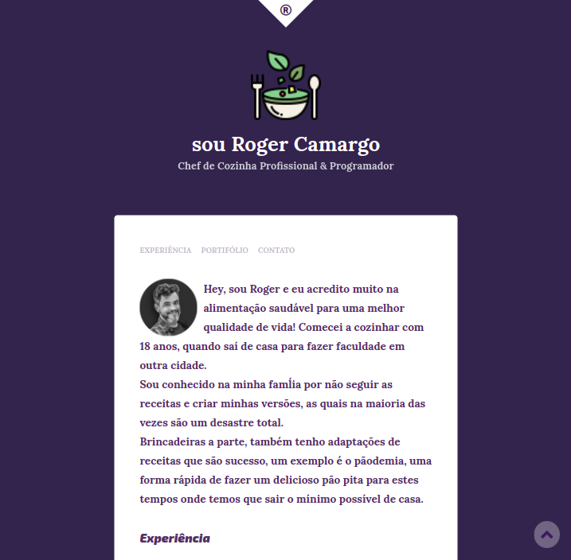

Nasci em Santos-SP no dia 22 de outubro do ano de 2003, mas passei a maior parte da minha vida morando em Praia Grande-SP. Fui filha única por 6 anos da minha vida, mas hoje sou a irmã mais velha de duas garotinhas irritantes que amo muito. Já pratiquei varios esportes e sempre estudei em escola pública. Fiz meu Ensino Médio integrado ao técnico em Administração na ETEC, sou estagiaria na Buser e estou cursando Engenharia da Computação na Faculdade Descomplica.
Um pouco da minha história
Vida Profissional
Desde pequena meus pais me ensiram que dinheiro não cai do céu e que tudo é conquistado com muito esforço. Por conta disso, eles me incentivaram a empreender em coisas simples, como vender chup-chup em casa e fazer/vender pulseiras (a que mais gostei). O resultado foi comprar um Samsung Galaxy Pocket 2 e ainda sobrar money para comprar bala. Já na adolescencia virei babá nas horas vagas até terminar o ensino médio. Minha primeira experiência profissional oficial está sendo na Buser, startup brasileira de mobilidade que criou um programa chamado BuserTech que une formação universitária com estágio remunerado, com o objetivo de formar e acelerar o desenvolvimento dos jovens na área de tecnologia.
Como achei esse programa?
Em frente ao local de prova do IME, no termino da prova, tinha representantes da Buser distribuindo planfetos sobre esse promagrama inédito e oferecendo haffals e toddynho de graça. De primeira, desconfiei da proposta, mas me inscrivi e cá estou hoje.
Portifólio

